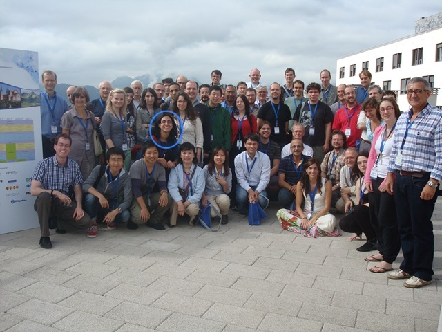
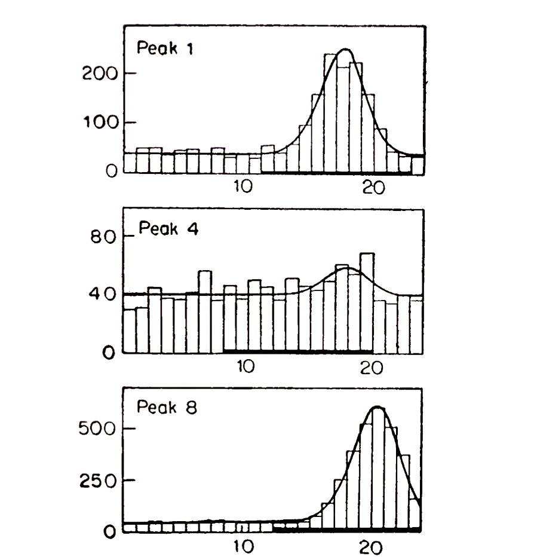
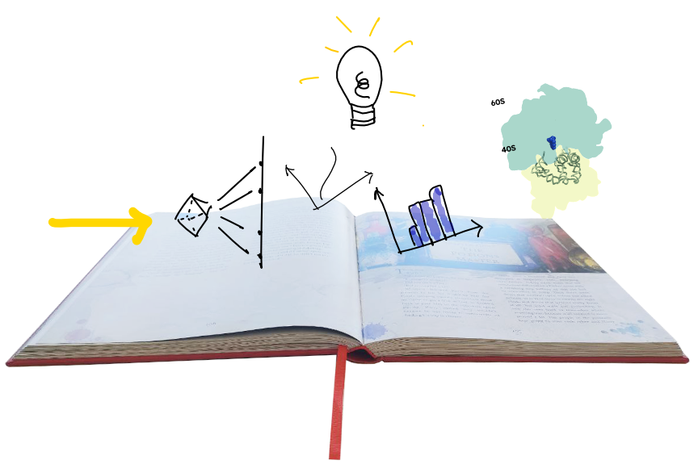
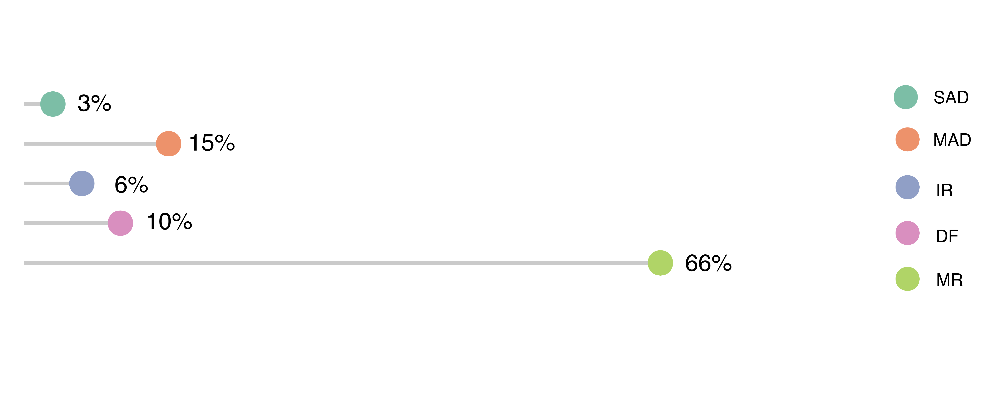
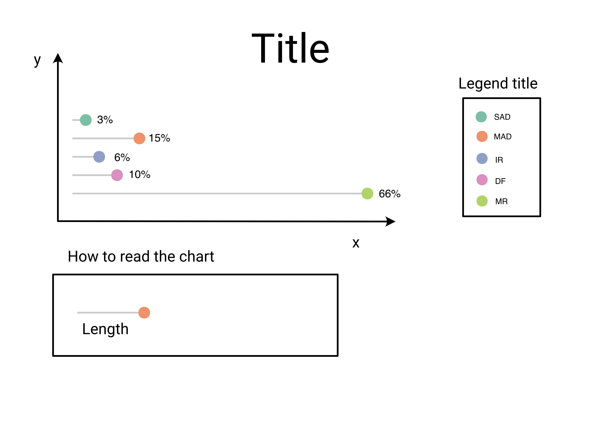
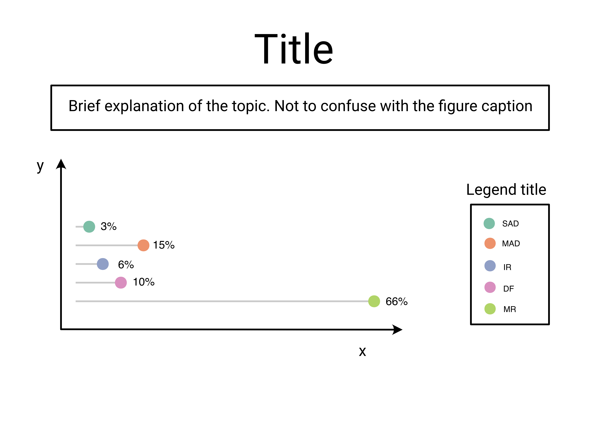
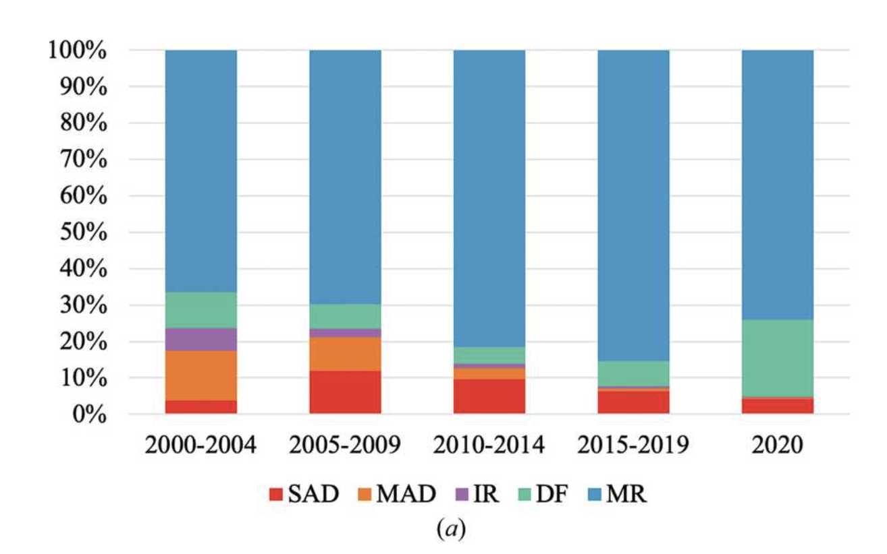
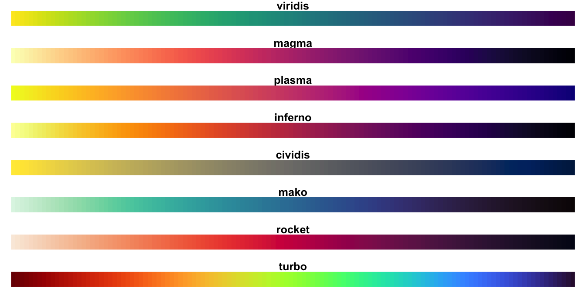

Res N_data Chi_sq I_sig
Min. :1.390 Min. : 1038 Min. :0.4700 Min. : 0.80
1st Qu.:1.670 1st Qu.: 7204 1st Qu.:0.5300 1st Qu.: 4.40
Median :2.120 Median :14077 Median :0.5400 Median :16.90
Mean :2.815 Mean :12629 Mean :0.5673 Mean :23.57
3rd Qu.:3.135 3rd Qu.:17550 3rd Qu.:0.5500 3rd Qu.:42.30
Max. :7.450 Max. :22436 Max. :0.9000 Max. :60.40
Complete d_sig CC1_2
Min. :50.70 Min. :0.670 Min. :-3.80
1st Qu.:88.45 1st Qu.:0.990 1st Qu.:28.10
Median :93.80 Median :1.730 Median :66.60
Mean :88.87 Mean :2.270 Mean :56.75
3rd Qu.:95.45 3rd Qu.:2.945 3rd Qu.:88.20
Max. :96.30 Max. :5.910 Max. :97.70 Visualising Statistics:
The art of transforming scientific results into visual graphic
Rita Giordano
IUCr Crystallographic Computing School 2023 Melbourne
About Me
IUCr Computational school Mieres 2011
Outline
Data visualisation
Summary statistics
Storytelling for scientific results
Empathy, inclusion and accessibility in your visualisation
Data visualisation
Data Visualisation
Why we need to use it

Statistics in crystallography

Bayesian statistics
Intensity statistics
Wilson statistics
Summary statistics
Shelx log file
Overview of mean, median and quantiles.
Is it enough ?
NO!
Ansconbe quartet
In 1973 Francis Anscombe created four datasets.
# A tibble: 4 × 6
set mean_x mean_y std_dev_x std_dev_y corr_x_y
<chr> <dbl> <dbl> <dbl> <dbl> <dbl>
1 1 9 7.50 3.32 2.03 0.816
2 2 9 7.50 3.32 2.03 0.816
3 3 9 7.5 3.32 2.03 0.816
4 4 9 7.50 3.32 2.03 0.817Ansconbe quartet

The “DatasauRus” datasets
# A tibble: 13 × 6
dataset mean_x mean_y std_dev_x std_dev_y corr_x_y
<chr> <dbl> <dbl> <dbl> <dbl> <dbl>
1 away 54.3 47.8 16.8 26.9 -0.0641
2 bullseye 54.3 47.8 16.8 26.9 -0.0686
3 circle 54.3 47.8 16.8 26.9 -0.0683
4 dino 54.3 47.8 16.8 26.9 -0.0645
5 dots 54.3 47.8 16.8 26.9 -0.0603
6 h_lines 54.3 47.8 16.8 26.9 -0.0617
7 high_lines 54.3 47.8 16.8 26.9 -0.0685
8 slant_down 54.3 47.8 16.8 26.9 -0.0690
9 slant_up 54.3 47.8 16.8 26.9 -0.0686
10 star 54.3 47.8 16.8 26.9 -0.0630
11 v_lines 54.3 47.8 16.8 26.9 -0.0694
12 wide_lines 54.3 47.8 16.8 26.9 -0.0666
13 x_shape 54.3 47.8 16.8 26.9 -0.0656Visualising the datasaurus

Storytelling for scientific results
Data storytelling
image R. Giordano
We can use data to tell a story
Storytelling can help to better explain scientific results.
How can we better tell a story?
Know your audience
Analyse the data to find insights
Find the right chart to represents your data
Add annotation
Don’t forget to include!
Audience
flowchart TD
A[Audience] --> B(Know the subject)
A[Audience] --> C(Don't know the subject)
B --> D[Yes]
D --> H{Know the type of chart?}
H --> I[Yes]
H --> J[No]
B --> E[No]
C --> F[Yes]
C --> G[No]
flowchart TD
A[Audience] --> B(Know the type of chart)
A[Audience] --> C(Don't know the type if chart)
B --> D[Yes]
D --> H{Know the subject?}
H --> I[Yes]
H --> J[No]
B --> E[No]
C --> F[Yes]
C --> G[No]
Anatomy of a visualisation
Expert or not expert, that is the question.
image R. Giordano
Anatomy of a visualisation
Expert in topic beginner in chart type
image R. Giordano
Anatomy of a visualisation
Beginner in topic expert in chart type
image R. Giordano
How to tell a different story
How to tell a different story

Empathy, inclusion and accessibility in your visualisation
Colour blindness
Colour blindness affect 1 in 12 men and 1 in 200 women in the world. There are different form:
Deuteranomaly: red-green colour blindness
Protonomaly: red-green colour blindness
Tritanomaly: blue-yellow colour blindness
Desaturated: reduction in colour vision to pure greyscale
Care to colour-blindness is to show empathy to others.
colourblind issue: example

How colourblindness perceive the colours

Colour blind friendly palette

{viridis} colour scales

Visual impairment: Alt-text
People with visual impairment use screen reader to decode images.
Screen reader read the Alt-Text of the image.
The Alt Text is an alternative text that is read from a narrator.
More details you will add more understanding will gain the person who is listening.
Conclusion
Keep always in mind your audience
Try to create visualisation that are accessible and clear